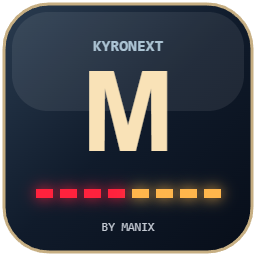
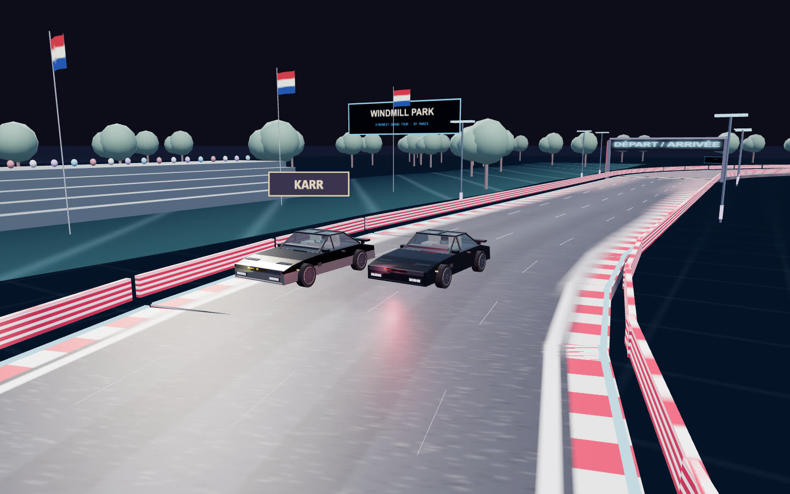
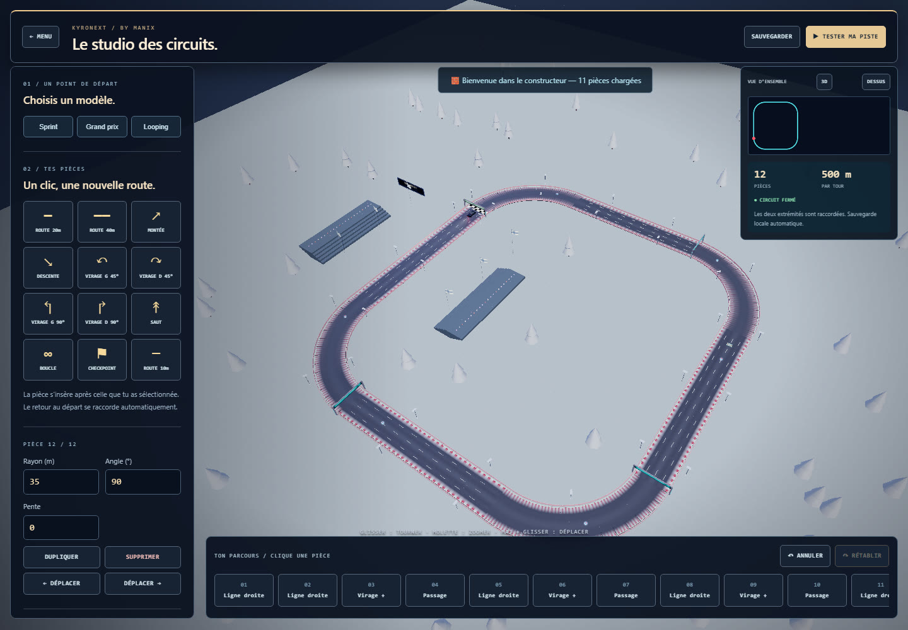

Ton jeu sur le PC.
Un installateur personnalisé KYRONEXT, avec le choix du dossier et les raccourcis du jeu.
↓ TÉLÉCHARGER L’INSTALLATEUR
KYRONEXT BY MANIXKNIGHT RIDER / GRAND TOUR / ÉDITION 01
KITT. KARR. Dix circuits fermés.
Une passion qui devient un jeu à emporter.
WINDOWS 10 / 11 · 64 BITS · JEU AUTONOME

LE GRAND TOUR KYRONEXT
Bruxelles et son Atomium, Paris, les roches de l’Arizona, les moulins et canaux néerlandais, les cerisiers du Japon, la Riviera italienne, la Ruhr, la Laponie et les Alpes. Des paysages imaginés pour le jeu, avec leurs drapeaux et leurs repères.

LE STUDIO DES CIRCUITS
Pars d’un modèle. Ajoute tes lignes droites, virages et cascades. Choisis un décor, puis teste ta création. Le retour au départ se raccorde automatiquement.
Annulation, sauvegarde automatique et partage des circuits par fichier JSON.
CHOISIS TA VERSION / BY MANIX
Version 1.0.0 · Windows 10 / 11, 64 bits. Le jeu et ses ressources sont inclus. Scores et circuits sauvegardés sur ton ordinateur. Les téléchargements sont hébergés sur GitHub.
Empreintes des fichiers ↗PRENDRE LE VOLANT